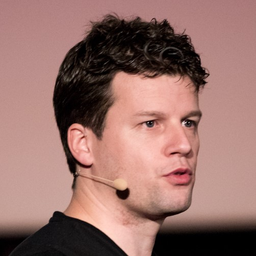
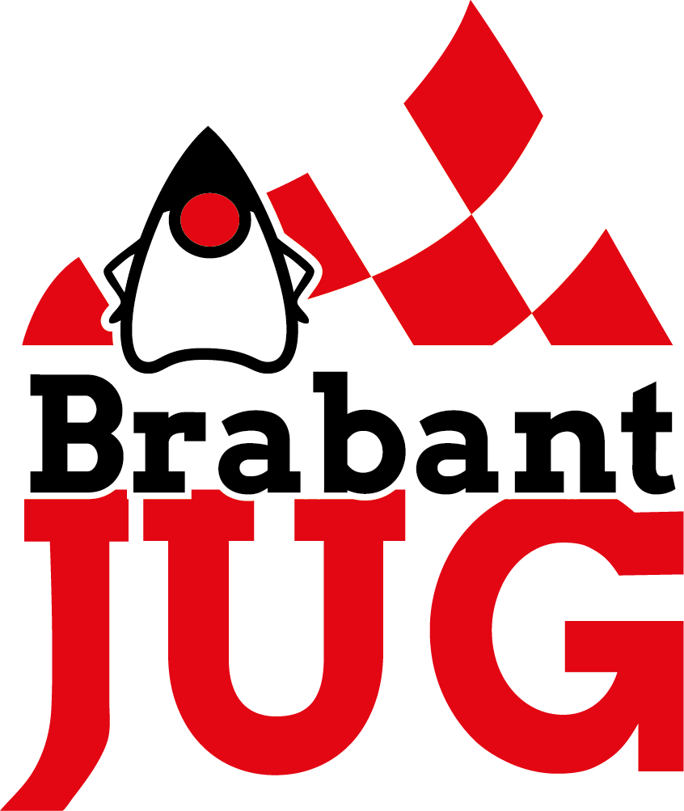

Is there life after Lombok?
Jaap Coomans
 @JaapCoomans
@JaapCoomans
 @JaapCoomans@mastodon.online
@JaapCoomans@mastodon.online
about:me
🏷️ Jaap Coomans
ğŸ Tilburg, The Netherlands
📅 Java since 2002
🧑‍💻 Software Architect at GROUP9
🚩 BrabantJUG Founder
👨‍👩‍👧‍👧 Husband, Father of 2 girls
🲠Avid boardgame player
🺠Craft beer sampler
 @JaapCoomans
@JaapCoomans
 @JaapCoomans@mastodon.online
@JaapCoomans@mastodon.online

